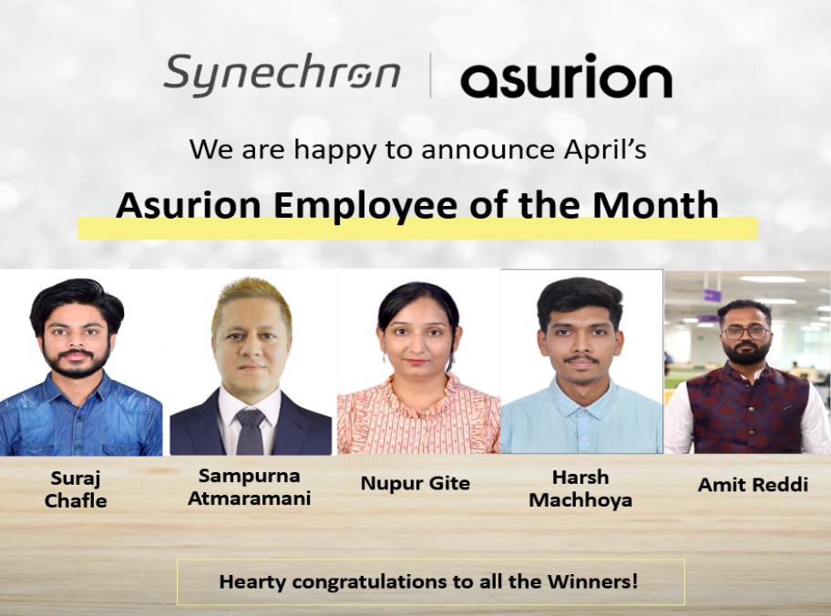
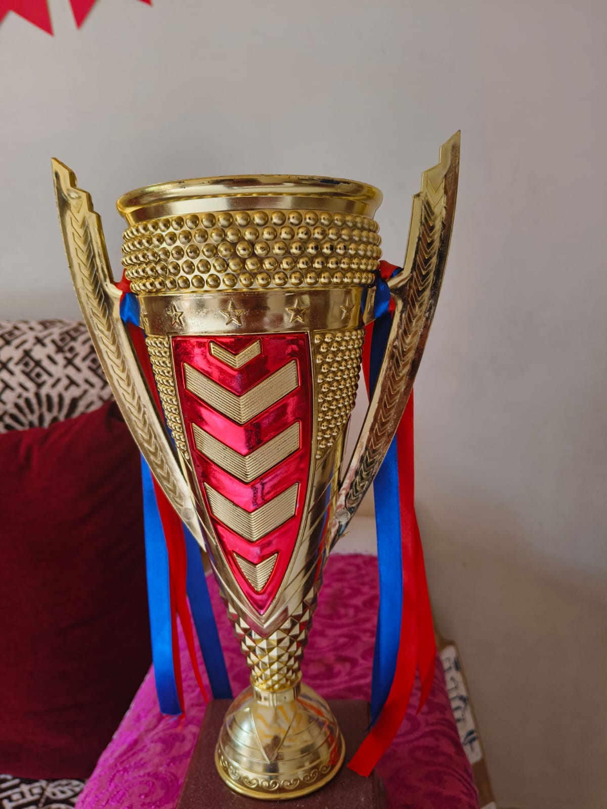
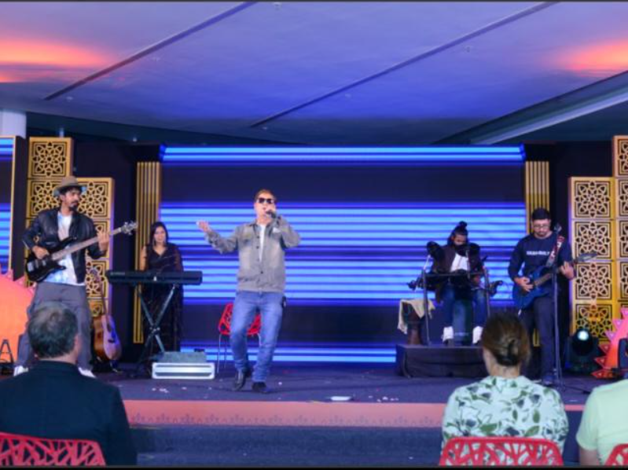
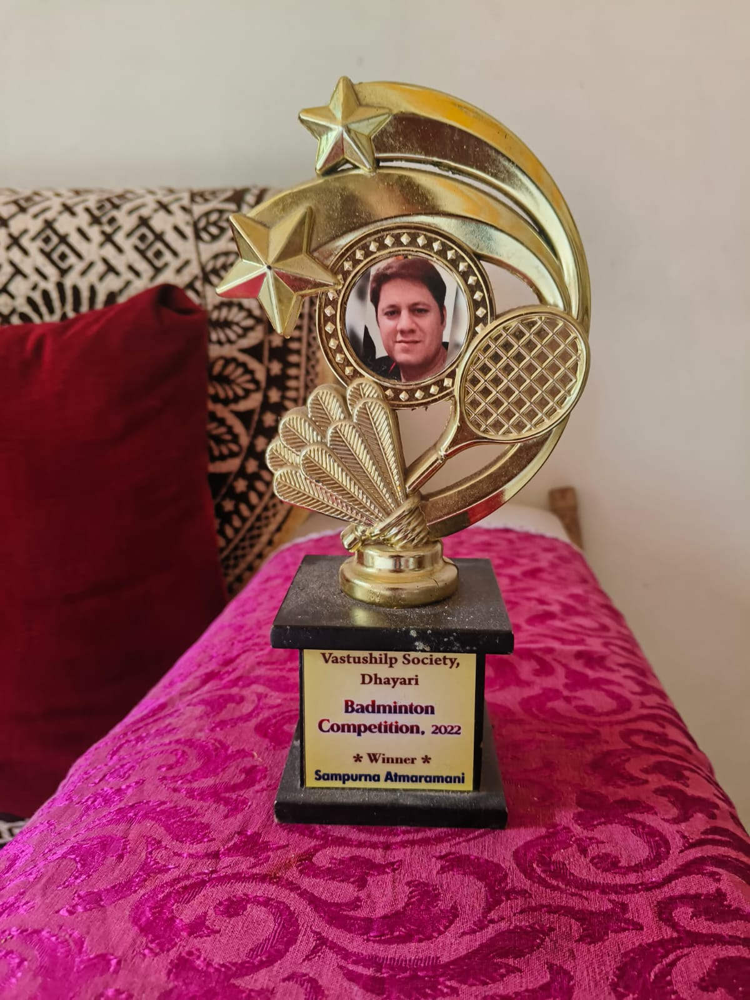
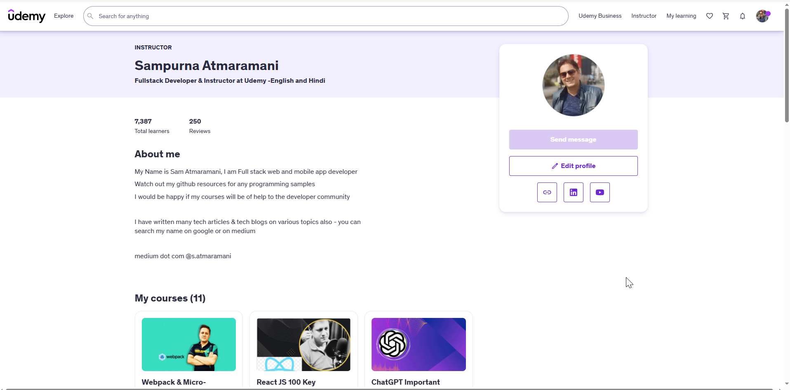

Sampurna Atmaramani - Senior AI Solutions Architect
20 years of experience in enterprise architecture, now focused on Generative AI, Agentic AI systems, and Python-driven AI platform engineering. Expert in LLM orchestration, RAG architectures, AI agents, AWS Bedrock, Azure AI Foundry, and cloud-native AI solutions.
About Me
Learn more about Sampurna Atmaramani - Senior AI Solutions Architect specializing in Generative AI, Agentic AI, and cloud-native AI systems
Sampurna Atmaramani is a seasoned AI and cloud architect with over 20 years of hands-on engineering experience across enterprise platforms. In recent years, my focus has shifted deeply to Generative AI, Agentic AI, LLM orchestration, and Retrieval Augmented Generation (RAG) systems built with Python-first engineering practices. Based in Pune, Maharashtra, India, I design secure, scalable, and production-grade AI solutions on AWS and Azure.
Certifications & Achievements
AWS Solutions Architect Professional
Credential ID: eba93c7b-b0c5-4891-8ece-38f45bda1cef
Star Performance Award
Synechron Technologies - April 2024
Employee of the Month
Infogain - January 2023
Udemy Instructor
4.6/5 Average Rating
Professional Summary
Sampurna Atmaramani is a Senior AI Solutions Architect with 20 years of experience designing distributed systems, cloud-native platforms, and AI-driven enterprise solutions. Specialized in Generative AI, Agentic AI, LLM orchestration, RAG pipelines, and Python-based AI architecture on AWS and Azure.
Professional Profile
Senior AI Solutions Architect
Professional Experience
20 years of professional journey from software engineering to AI architecture, cloud-native platform design, and enterprise Gen AI delivery
Senior UI Architect & AI Engineer
McFadyen Digital Aug 2025 - PresentPune, Maharashtra, India
Tech Stack: Python, LangChain, LangGraph, OpenAI APIs, Ollama, PgVector, RAG, Docker, AWS, Azure
- Architecting Generative AI and Agentic AI platforms using microservices and event-driven cloud patterns
- Designed AI-powered code review platform using Ollama and Phi models as containerized AI microservices
- Built AI mock interview platform with OpenAI APIs, PgVector, semantic search, and speech synthesis integrations
- Developed embedding pipelines and knowledge retrieval systems using Python, Pandas, and NumPy
- Implemented multi-agent orchestration workflows with LangChain and LangGraph for intelligent automation
Senior Architect & Full Stack Lead
Synechron Technologies Aug 2023 - Aug 2025Client: Asurion Insurance Services (US)
Tech Stack: AWS (EC2, Lambda, S3, VPC, IAM), Node.js, React.js, Python, CrewAI, LangChain, CDK, GitHub Actions
- Led architecture and development of enterprise cloud-native platforms using AWS microservices and serverless patterns
- Designed distributed systems integrating Node.js services, React frontends, and Python AI services
- Implemented Agentic AI workflows using CrewAI and LangChain for automated news ingestion pipelines
- Built Python AI microservices for embeddings, model experimentation, and data processing at scale
- Led cross-functional teams of 20+ engineers and mentored developers on AI platform architecture
Technology Lead / Architect
Infogain India Pvt Ltd Jan 2021 - Aug 2023Clients: Seagate (US), SavATree
Tech Stack: React.js, Webpack, Micro Frontend, Node.js, Python, Ollama, Azure, Azure DevOps, GitHub Actions, Jenkins
- Architected enterprise micro frontend solutions using React and Webpack
- Developed Node.js microservices platforms deployed on Microsoft Azure cloud architecture
- Designed secure Azure infrastructure including identity with Azure Active Directory / Entra ID
- Implemented AI chatbot solutions using open source LLMs including Phi3, Phi4, and Qwen via Ollama
- Built automation and AI data pipelines using Python ecosystem libraries
Technical Project Manager
Honey Computing Services Jul 2014 - Jan 2021Tech Stack: AWS, Alibaba Cloud, Node.js, React.js, Microservices, Multi-tenant SaaS
- Designed multi-tenant SaaS platforms for inventory and subscription management
- Architected cloud infrastructure across AWS and Alibaba cloud ecosystems
- Led secure and scalable enterprise application delivery for distributed teams
- Managed end-to-end delivery and offshore engineering execution
Software System Analyst
Cybage Software Jul 2006 - Jul 2014Tech Stack: PHP, LAMP Stack, JavaScript, jQuery, AngularJS, CodeIgniter
- Developed enterprise web applications and backend systems for high-traffic platforms
- Delivered corporate training programs on JavaScript and frontend architecture
- Recognized as Cybage Certified Trainer and trained 100+ developers
- Led multiple full lifecycle delivery initiatives across enterprise clients
Software Engineer
People Interactive Pvt Ltd (Shaadi.com) Sep 2005 - Jul 2006Tech Stack: Backend Web Systems, High-Traffic Application Architecture
- Developed backend systems supporting large-scale matrimonial platform traffic
- Contributed to performance-oriented engineering for consumer internet applications
Technical Skills
Deep expertise in Generative AI, Agentic AI systems, Python AI engineering, and enterprise cloud architecture across AWS and Azure
Generative AI & Agentic AI
RAG & Retrieval Architectures
Agentic AI Frameworks
Python AI & Data Ecosystem
Cloud Platforms & AI Infrastructure
DevOps, Observability & Architecture
Programming & Web Foundations
Leadership & Delivery
Featured Projects
Selected enterprise and AI platform projects focused on Agentic AI, RAG systems, and scalable engineering architecture
AI Code Review Agent
Designed and developed an AI-assisted code review agent for developer workflows with local model execution, intelligent review comments, and architecture-aware recommendations. Built with Python and AI-first architecture for practical developer productivity.
AI Mock Interview Platform
Built an AI interview preparation platform using RAG architecture to generate interview questions, evaluate answers, and provide personalized candidate feedback with semantic retrieval pipelines.
Cucumber JS Distributed Testing Framework
Engineered a distributed test execution framework for large QA suites with parallel sharding, centralized reporting, and cloud-integrated artifact pipelines for high-speed CI execution.
Hobbies & Creative Pursuits
Beyond coding, Sampurna Atmaramani expresses creativity through music and artistic endeavors, maintaining a balanced work-life approach
Flute Playing
Sampurna Atmaramani is passionate about playing the flute and has been recognized for musical talents. Flute performances showcase both technical skill and emotional expression.
Singing
Sampurna Atmaramani enjoys singing and has performed various songs, including classical and contemporary pieces. Music is a great way to unwind and express creativity outside of technology.
Creative Expression
Sampurna Atmaramani's hobbies reflect a belief in maintaining work-life balance. Whether it's music, art, or other creative pursuits, these activities help stay inspired and bring fresh perspectives to technical work.
My Own NPM Packages
Sampurna Atmaramani contributing to the JavaScript community with open-source packages and developer tools
NPM Profile
Sampurna Atmaramani has developed and published multiple NPM packages to help the JavaScript community. These packages are designed to solve common development challenges and improve developer productivity.
Package Development
Sampurna Atmaramani creates reusable, well-documented packages that follow NPM best practices. Each package includes comprehensive documentation, examples, and is actively maintained.
Community Impact
Sampurna Atmaramani contributes to the open-source ecosystem by publishing packages that help developers build better applications faster and more efficiently.
Docker Hub Repositories
Containerized AI tooling and automation images published for reusable enterprise workflows and rapid deployment.
AI/ML Projects on Hugging Face
Explore Sampurna Atmaramani's latest AI-powered applications and tools built with Python, Gradio, and advanced machine learning models
Background Removal Tool
AI-powered background removal using advanced computer vision algorithms. Perfect for product photos, portraits, and creative projects. Developed by Sampurna Atmaramani on Hugging Face Spaces using Python and advanced ML models.
Image Style Transfer Studio
Transform images into artistic styles including caricature, pencil sketch, Ghibli anime style, and Warhol pop art effects. Built by Sampurna Atmaramani using Python, Gradio, and OpenCV.
Speech AI Suite
Comprehensive speech processing tools including speech-to-text, text-to-speech, and audio sentiment analysis using Whisper and gTTS. Developed by Sampurna Atmaramani for advanced audio AI applications.
AI Sentiment Analyzer
Advanced sentiment and emotion analysis using multiple AI models including Transformers and TextBlob for comprehensive text analysis. Built by Sampurna Atmaramani for natural language processing applications.
Image Enhancement Suite
Professional image enhancement tools including brightness/contrast, saturation, sharpening, noise reduction, color balance, vintage effects, and HDR. Developed by Sampurna Atmaramani for professional photography and design applications.
Frequently Asked Questions
Common questions about Sampurna Atmaramani's experience, expertise, and services
I have 20 years of hands-on experience in software engineering, technical architecture, and team leadership, with my recent focus on Generative AI, Agentic AI, Python, RAG, and cloud-native AI platforms on AWS and Azure.
I am an AWS Certified Solutions Architect Professional (Credential ID: eba93c7b-b0c5-4891-8ece-38f45bda1cef), demonstrating expertise in cloud architecture, scalability, and AWS services. I also have extensive hands-on experience with Azure and other cloud platforms.
My core expertise includes React.js, Node.js, TypeScript, Python, AWS (Solutions Architect Professional), DevOps, Microservices, Micro Frontend architecture, Docker, Kubernetes, CI/CD pipelines, and AI/ML technologies. I specialize in building scalable, cloud-native applications and leading technical teams.
Yes. I am a Udemy instructor with a 4.6/5 average rating, write technical content, and create tutorial videos. My recent content and delivery focus strongly on Generative AI, Agentic AI, Python engineering, cloud architecture, and modern AI platform practices.
I've built diverse projects including AI-powered drawing platforms with background removal and sentiment analysis, enterprise inventory management systems, dynamic website creators, clinic management applications, advocate case management systems, and multiple AI/ML applications on Hugging Face. My projects span web applications, mobile apps, and cloud-native solutions.
All my AI/ML projects are available on Hugging Face at huggingface.co/techysam with live demos for background removal, image style transfer, speech AI suite, sentiment analysis, and image enhancement. I've also published NPM packages at npmjs.com/~s.atmaramani.
Yes, I'm open to consulting, architecture reviews, training sessions, code reviews, and AI transformation projects. I offer services in AI architecture consulting, Agentic AI and RAG implementation, cloud platforms (AWS/Azure), microservices architecture, team training, and enterprise AI integration. Contact me at s.atmaramani@gmail.com or +91 9323895896.
Yes, I have extensive leadership experience, having led teams of 100+ engineers across multiple geographies at companies like Synechron, Infogain, and Honey Computing Services. I've mentored developers, established CI/CD pipelines, architected microservices systems, and been recognized as Top Trainer and Employee of the Month.
I'm based in Pune, Maharashtra, India, and work with clients globally, including US-based companies. I have extensive experience working remotely and collaborating with distributed teams across different time zones.
I focus on scalable, maintainable solutions using microservices, cloud-native architectures, and modern best practices. I emphasize hands-on coding involvement rather than just theoretical architecture, ensuring practical implementations with Infrastructure as Code (CDK), automated testing (Playwright), and comprehensive CI/CD pipelines.
I've received the Star Performance Award from Synechron Technologies (April 2024), Employee of the Month from Infogain (January 2023), Top Trainer recognition at Cybage Software (FY 2013-14), and maintain a 4.6/5 rating as a Udemy instructor. I've also won sports competitions including badminton tournaments.
Yes, I actively work with AI/ML technologies, creating applications using Python, Transformers, Hugging Face, OpenCV, and various ML models. I've deployed 5+ AI spaces covering image processing, speech recognition, sentiment analysis, and have integrated AI features into production applications including background removal and audio sentiment analysis.
Get In Touch
Connect with Sampurna Atmaramani for technical consulting, project collaboration, or professional networking opportunities
Let's Connect
Sampurna Atmaramani is always interested in new opportunities, collaborations, and interesting projects. Feel free to reach out for technical consulting, project collaboration, or professional networking!
Send a Message
Awards & Recognition
Celebrating Sampurna Atmaramani's achievements and memorable moments in technology and leadership

Star Performance Award
Synechron Technologies - April 2024

Employee of the Month
Infogain - January 2023


Badminton Winner
Sports excellence recognition for Sampurna Atmaramani
